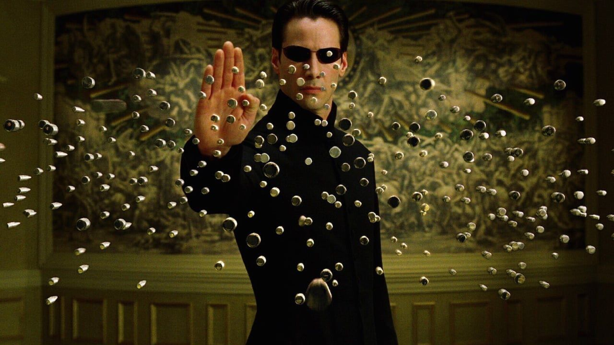
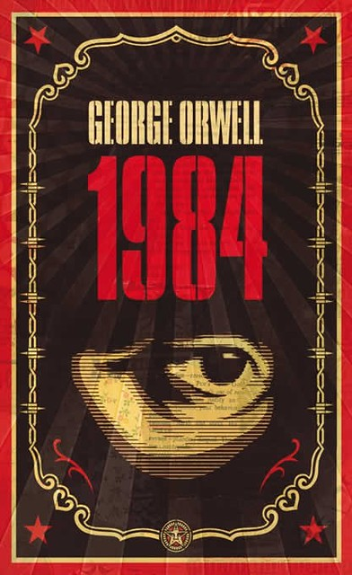

O Que É Fantasia e Ficção Científica?
A ficção científica é um gênero da ficção especulativa, que normalmente lida com conceitos ficcionais e imaginativos, relacionados ao futuro, ciência e tecnologia e seus impactos e/ou consequências em uma determinada sociedade ou em seus indivíduos, desenvolvido no século XIX. Normalmente evita-se utilizar o sobrenatural, baseando-se em fatos científicos e reais para compor enredos ficcionais. Podendo girar em torno de um grande leque de possibilidades como: viagem espacial, viagem no tempo, universos paralelos, mudanças climáticas, totalitarismo e/ou vida extraterrestre.
A fantasia é um gênero da ficção em que se usa geralmente fenômenos sobrenaturais, mágicos e outros como um elemento primário do enredo, tema ou configuração. Como noutras formas de ficção, os acontecimentos e ações na literatura fantástica muitas vezes diferem daqueles possíveis na realidade, embora não seja regra. Em muitos casos, especialmente em trabalhos mais antigos, mas também em muitos modernos, isto é explicado por uma ntervenção divina, mágica, ou de outras forças sobrenaturais. Noutrous casos, como na chamada high fantasy, a história pode acontecer num mundo completamente fantástico, diferente do nosso, onde nele existe a magia, e as leis do mundo real nem sempre regem o mundo imaginário.
Tropos e Clichês
Tropos e clichês são muito comuns em obras de ficção científica e fantasia, sendo essênciais para seu entendimento, como veremos a seguir.
O Escolhido
Seja um herói escolhido pelos deuses para salvar o mundo, seja um jovem profetizado a matar um mal terrível. O Escolhido é uma temática de enredo muito utilizada ao longo dos anos por diversos escritores e roteiristas, sendo bastante predominante na alta fantasia (high fantasy), embora também sejam retratados na baixa fantasia (low fantasy) e na ficção científica.
Neo é O "Escolhido" no filme "Matrix"
Além disso, muitos dessas personagens apresentam habilidades especiais de acordo com sua obra de origem, sendo expecionais em utilizá-las. Eles também possuem uma missão importante, a qual normalmente concede a personagem o título de O Escolhido, na qual eles terão de cumprir uma tarefa para alcançar seu objetivo.
Distopias
A distopia é um conceito filosófico adotado por vários autores e expresso em suas criações ficcionais, nas quais eles retratam uma sociedade construída no sentido oposto ao da utopia, que por sua vez prevê um sistema perfeito, um estado ideal, onde vigora a máxima felicidade e a total concórdia entre seus cidadãos.
A literatura distópica também pode representar um regime utópico que na prática destoa da teoria. As comunidades regidas pela distopia normalmente apresentam governos totalitários, ditatoriais, os quais exercem um poder tirânico e um domínio ilimitado sobre o grupo social.
1984 de George Orwell
No campo literário as distopias têm início após a consolidação de um regime utópico. Os distúrbios do mundo contemporâneo são apenas velados pela suposta assepsia social. Em um dado momento eles explodem como a lava de um vulcão por longo tempo sufocado.
A maior parte das vezes as histórias são narradas por um protagonista ciente da realidade, porém mergulhado na ignorância geral. Os autores incrementam os enredos com elementos como o abuso da repressão material e mental, a utilização de entorpecentes e de robôs, e a exclusividade do saber, meios usados para oprimir diretamente a sociedade.